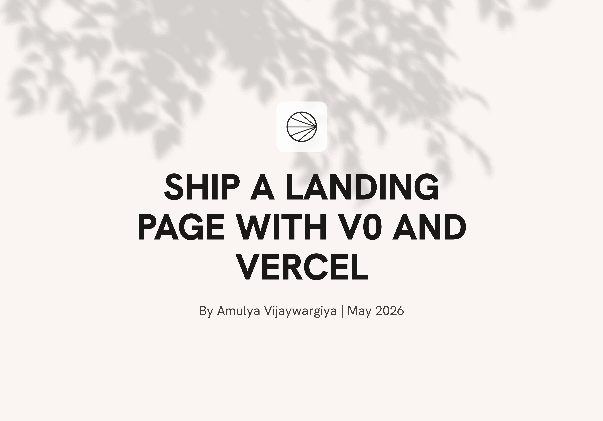
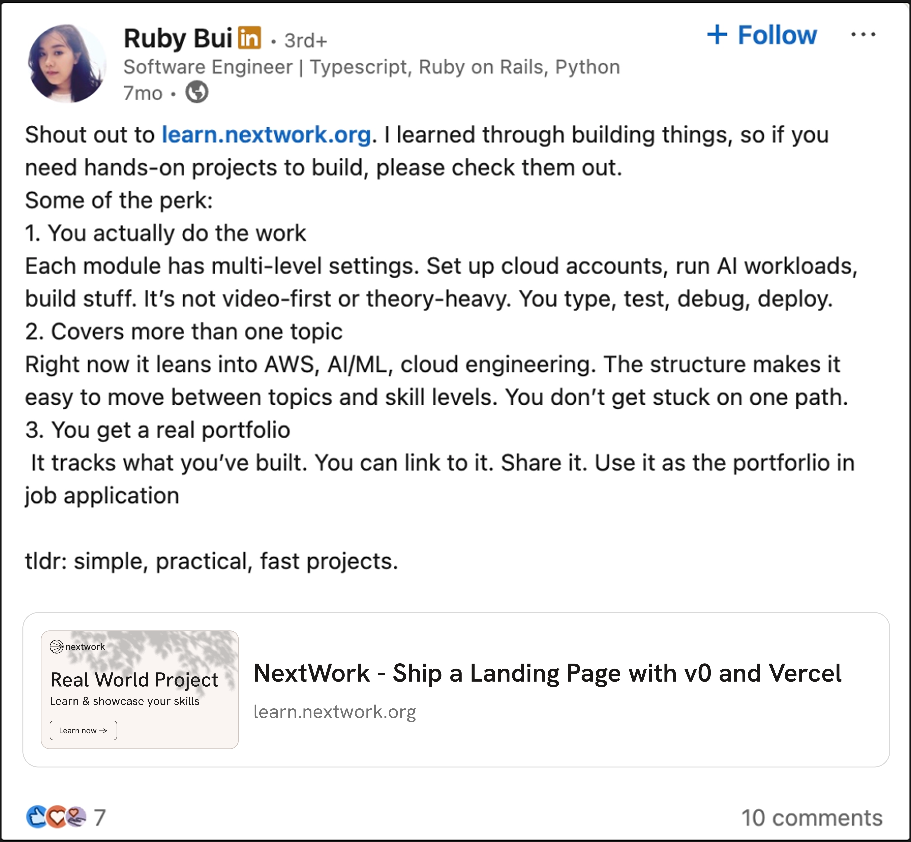
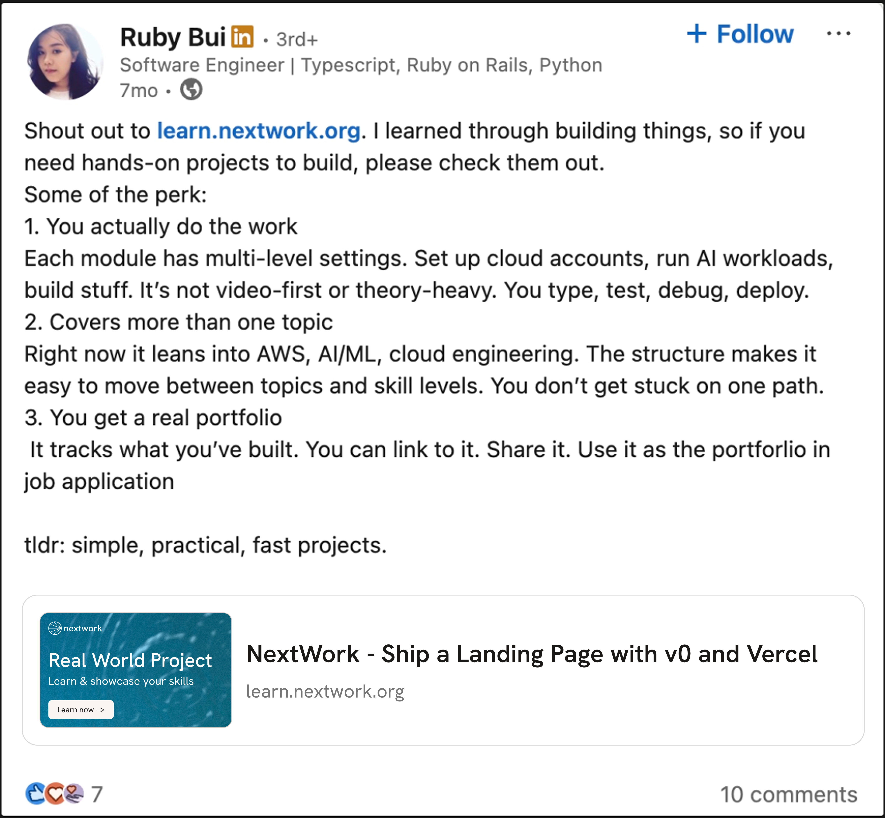

Part 3
03
Portfolio
Portfolio
Themes
NextWork portfolios are not just documentation pages. They are confidence pages.
I designed two themes that feel alive, expressive, and shareable while keeping the project content easy to read.

Portfolio preview

LinkedIn post preview
Theme 2
H2O
An interactive blue theme where soft water ripples respond to cursor movement or clicks.
View live page
Portfolio preview

LinkedIn post preview